Welcome to Lesson 3
In Lesson 2, you learned that AI image generation has technical, ethical, legal, and workflow limits. Lesson 3 asks the next professional question: which tool is suitable for this creative objective?
Choose
Match the tool to the creative objective.
Compare
Run the same prompt in different tools and inspect differences.
Document
Record settings and decisions so the workflow is explainable.
Learning Objectives
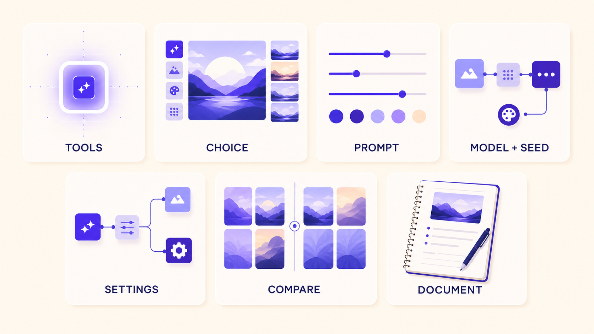
By the end of this lesson, you will be able to:
- Identify major categories of AI image-generation tools and describe their typical strengths and limitations.
- Distinguish between simple web-based platforms, semi-controlled creative platforms, and open-source ecosystems.
- Choose an appropriate tool according to a creative or technical objective instead of asking which tool is universally best.
- Explain the basic meaning of prompt, model, checkpoint, seed, sampler, steps, and CFG scale.
- Compare results generated from the same idea using different tools and clear evaluation criteria.
- Apply controlled experimentation by changing one variable at a time and observing the effect.
- Document tool settings, outputs, limitations, and decisions as part of a repeatable creative workflow.
Lesson Map: From Random Tool Choice to Controlled Workflow
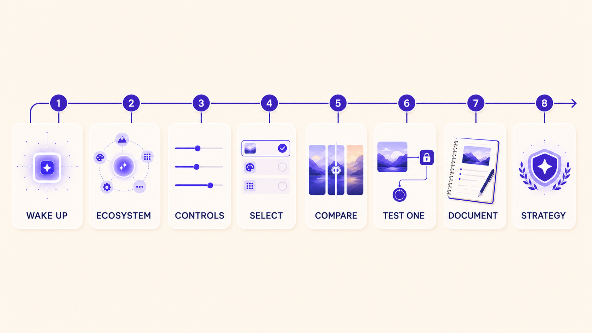
Lesson 3 is organized as a set of guided missions. Each mission asks you to classify, choose, test, document, or explain.
| Mission | Interaction | Main skill |
|---|---|---|
| 1. Tool Choice Wake-Up | Quick prediction quiz + click-to-reveal | Understand that the tool shapes the image |
| 2. Ecosystem Sorting Lab | Drag-and-drop classification | Distinguish simple, semi-controlled, and open-source tools |
| 3. Parameter Flashcard Sprint | Flashcards + gap-fill | Learn prompt, model, checkpoint, seed, sampler, steps, CFG scale |
| 4. Same Prompt Lab | Hands-on comparison | Compare tool behavior |
| 5. One Variable Test | Controlled experiment | Change only one variable at a time |
| 6. Final Boss | Scenario strategy | Build a complete tool strategy |
The AI Image-Generation Ecosystem
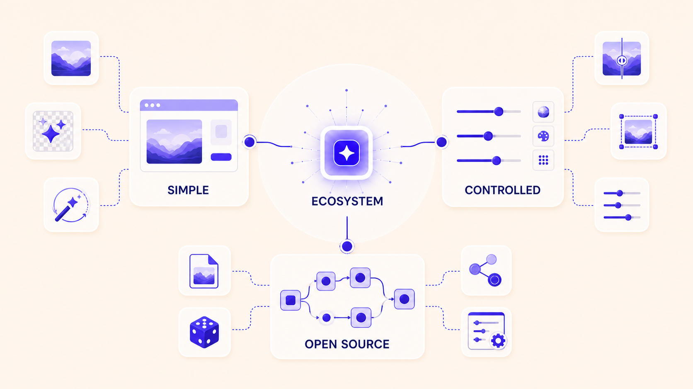
AI image generation is not one universal button. It is an ecosystem of platforms, models, interfaces, parameter controls, safety filters, usage terms, presets, and workflows.
Simple tools
Fast, accessible, useful for first ideas and classroom comparison.
Semi-controlled tools
Expose more controls such as style, aspect ratio, negative prompts, variations or editing.
Open-source workflows
Offer deeper control over models, checkpoints, seeds, samplers, steps, and pipelines.
Complete the Ecosystem Idea
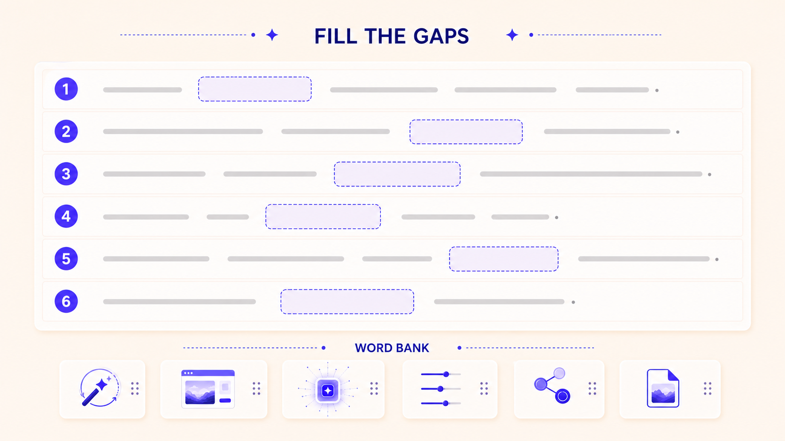
Instructions: Drag or tap the correct word from the bank into each blank. Then check your answer.
Mini reflection
Tool Categories at a Glance
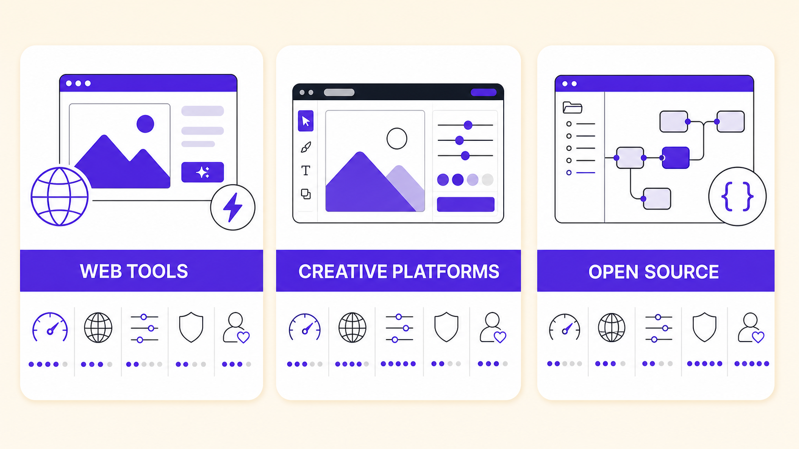
Tool categories are not better or worse in general. They are better or worse for a specific stage of work.
| Tool category | What learners should notice | Best used for | Main limitation |
|---|---|---|---|
| Simple web-based tools | Prompt box, generate button, presets, limited visible parameters. | Quick ideation, first experiments, moodboards, classroom comparison. | Less parameter control, hidden defaults, limited reproducibility. |
| Semi-controlled creative platforms | More visible options: style, aspect ratio, variations, editing, negative prompts. | Prompt refinement, style testing, controlled alternatives, early editing workflows. | Controls may still be simplified; outputs may depend on hidden platform logic. |
| Open-source ecosystems | Models, checkpoints, seeds, samplers, steps, pipelines, advanced workflows. | Reproducible experimentation, advanced editing, custom workflows, creative autonomy. | Higher learning curve, installation/hardware needs, more responsibility. |
Activity 1 — Ecosystem Sorting Lab
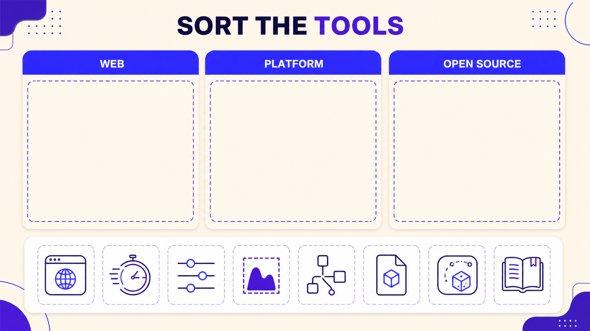
Objective: Classify tools by access, control level, best use, and main limitation.
Part A — Classify the tool cards
Place each tool card into the most appropriate category. In a SCORM version, this can be implemented as a drag-and-drop sort.
| Tool card | Simple web-based | Semi-controlled platform | Open-source / advanced | Evidence |
|---|---|---|---|---|
| Prompt box + generate button + few visible settings | ☐ | ☐ | ☐ | |
| Style presets + aspect ratio + variations + basic editing | ☐ | ☐ | ☐ | |
| Model files + checkpoints + seed + sampler + workflow graph | ☐ | ☐ | ☐ | |
| Fast browser interface useful for quick ideation | ☐ | ☐ | ☐ | |
| Local or hosted workflow with technical settings | ☐ | ☐ | ☐ |
Part B — Build your ecosystem map
| Tool | Type of tool | Access | Visible controls | Control level | Best for | Main limitation |
|---|---|---|---|---|---|---|
Choosing the Right Tool for the Creative Objective
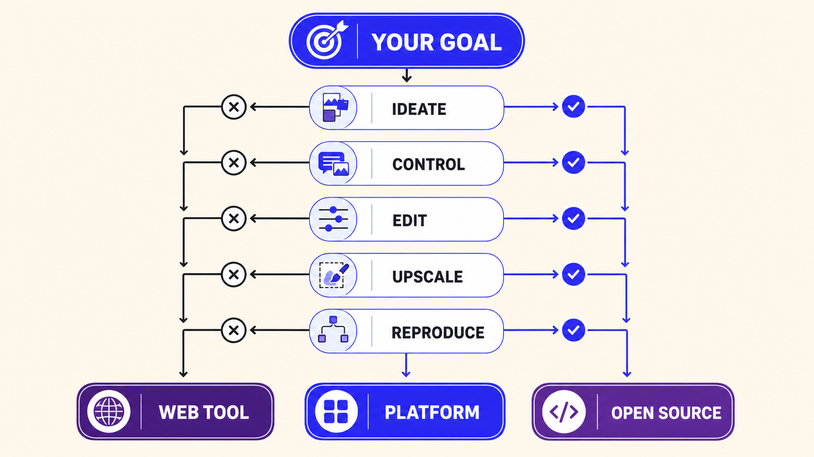
A common beginner mistake is to choose a tool randomly and judge AI image generation by the first result. A more professional approach begins with the objective.
| Creative objective | Recommended tool type | Reason |
|---|---|---|
| Quick visual brainstorming | Simple web-based tool | Fast, accessible, suitable for many first drafts. |
| Moodboard generation | Web-based or semi-controlled platform | Allows many variations quickly without heavy setup. |
| Testing prompt language | Any tool with repeatable generation | Useful for comparing how prompt changes affect output. |
| Character consistency | Advanced or open-source workflow | Often requires seeds, references, image-to-image or control methods. |
| Correcting part of an image | Tool with inpainting | Allows editing a problem area without starting from zero. |
| Professional workflow | Open-source or controlled platform | Better for documentation, control, and reproducibility. |
Activity 2 — Tool Selection Challenge
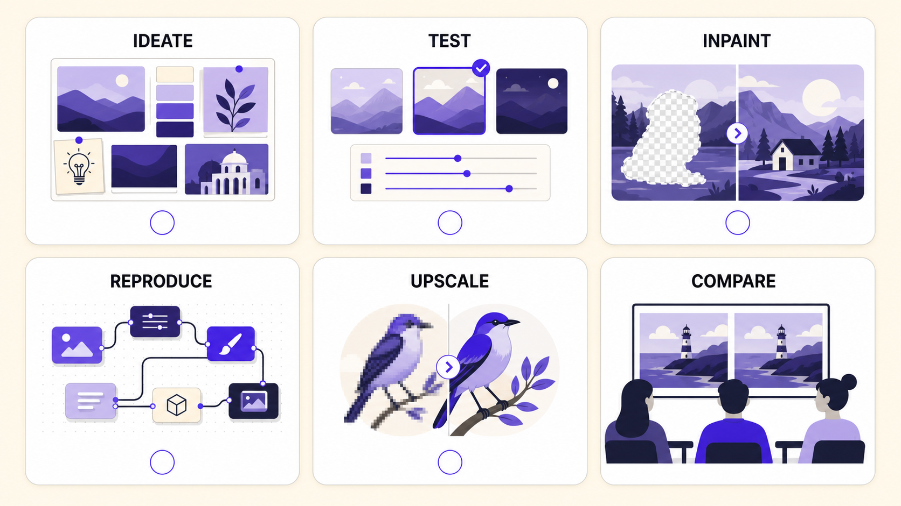
Instructions: Read each scenario. Select a tool type and justify your decision. Then compare your answer with the feedback.
| Scenario | Recommended tool type | Why? | Feedback after reveal |
|---|---|---|---|
| Generate ten quick visual directions for a moodboard. | A simple web-based tool is enough because speed and variety matter. | ||
| Compare the effect of seed, sampler, steps, and CFG scale. | A tool with visible parameters is needed. | ||
| Correct one distorted hand in an otherwise strong image. | A tool with inpainting or local editing is appropriate. | ||
| Prepare a reproducible workflow for a series. | A controlled or open-source workflow is better because documentation and repeatability matter. | ||
| Create a high-resolution final asset for presentation. | Use a tool with export and upscaling controls. |
Parameters and Controlled Experimentation
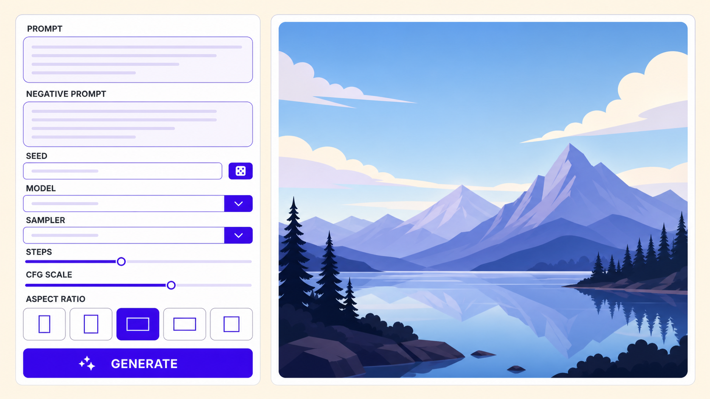
As tools become more advanced, they expose parameters that influence the generated image. These parameters are not only technical details; they are creative controls.
| Parameter | Main role | Possible visual influence | Practical advice |
|---|---|---|---|
| Prompt | Main language instruction | Subject, style, context, composition, constraints | Change wording intentionally and record the exact version. |
| Model / checkpoint | Visual tendencies and capabilities | Realism, style, anatomy, genre | Do not compare outputs fairly if the model changes without noting it. |
| Seed | Random starting point | Composition, variation, repeatability | Use the same seed when testing small prompt changes, if available. |
| Sampler | Denoising method | Texture, stability, sharpness, speed | Compare samplers only when prompt, seed and steps are stable. |
| Steps | Number of denoising iterations | Speed, detail, refinement | More is not always better; test low, medium and high values. |
| CFG scale | Prompt guidance strength | Prompt adherence vs freedom and quality | Extreme values can create rigid or artifact-heavy outputs. |
| Aspect ratio | Frame shape | Poster, slide, square, banner, storyboard | Choose format according to final use. |
Activity 3 — Parameter Flashcard Sprint
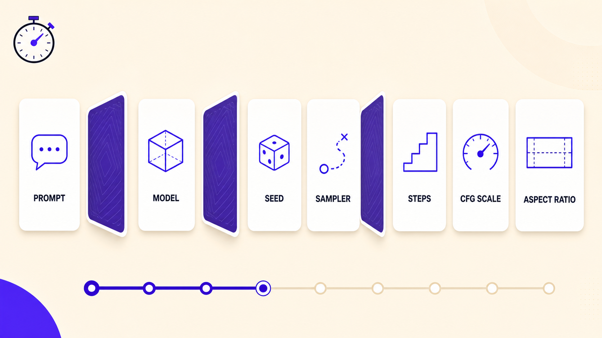
Instructions: Flip each card. Try to explain the term before revealing the answer. Then choose one term and write your own analogy.
Your analogy
Hotspot Interaction — Interface Detective
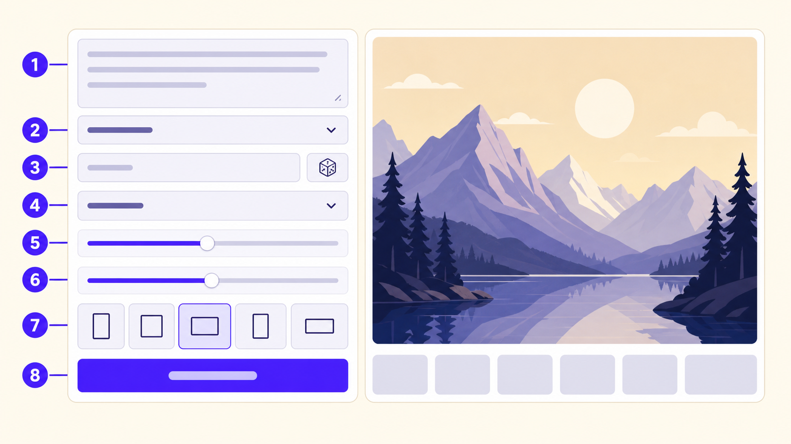
Instructions: Click the numbered hotspots. Identify where each parameter appears in a tool interface. If a real tool hides it, document that as an interface limitation.
| Control | Visible / hidden? | Why it matters |
|---|---|---|
| Prompt | ||
| Model or preset | ||
| Seed | ||
| Sampler | ||
| Steps | ||
| CFG scale |
Prompt Practice and Improvement
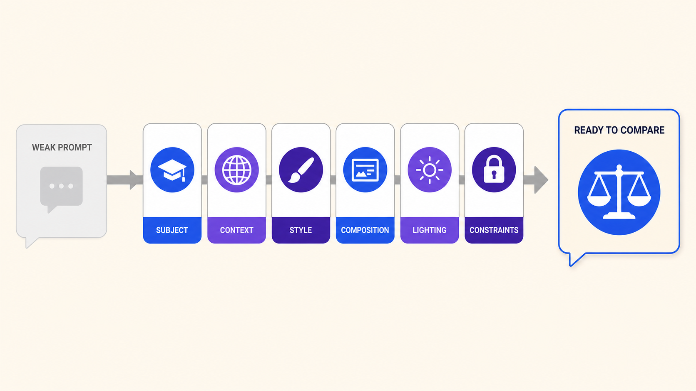
Tool comparison and parameter testing depend on prompts that are clear enough to evaluate. Improved prompts are not final formulas; they are starting points for testing, comparison, and revision.
| Original prompt | Expected issue | Improved prompt logic |
|---|---|---|
| A cool AI poster. | Generic poster-like image, fake text, unclear layout. | Vertical poster background; AI image generation; abstract camera/neural forms; empty space; no text or logos. |
| A product photograph of a bottle. | Material, shape, background, angle and lighting are unspecified. | Transparent reusable water bottle; white table; centered composition; natural window light; no logo or text. |
| A robot in a city. | Too broad to diagnose; many variables change at once. | Base prompt plus controlled lighting variations: natural, sunset, studio or night lighting. |
Activity 4 — Prompt Repair Mini-Lab
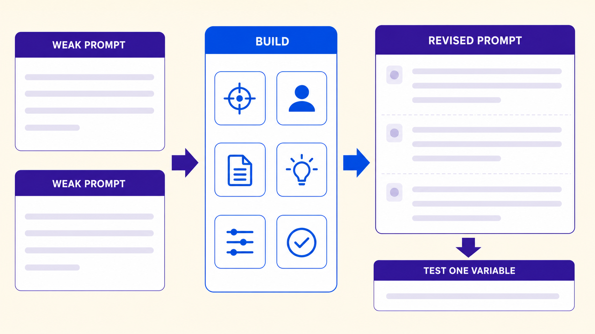
Instructions: Select two weak prompts. Rewrite each prompt so it includes subject, context, style, composition, lighting, and constraints. Then identify which variable you would test first.
| Weak prompt | Revised comparison-ready prompt | First variable to test | Why? |
|---|---|---|---|
| A cool AI poster. | |||
| A product photograph of a bottle. | |||
| A futuristic photography studio. |
Activity 5 — Same Prompt, Different Tools
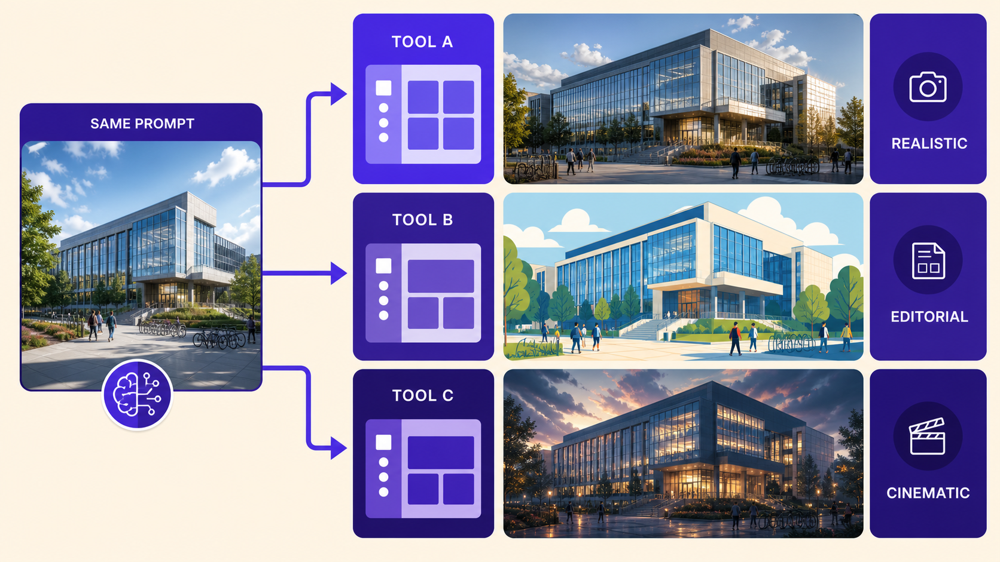
Objective: Compare how two or more tools interpret the exact same prompt.
Part A — Choose one prompt
Part B — Generate and record
| Category | Tool 1 | Tool 2 |
|---|---|---|
| Tool name | ||
| Model or preset, if visible | ||
| Aspect ratio | ||
| Seed, if visible | ||
| Strengths | ||
| Weaknesses | ||
| Errors or hallucinations | ||
| Best use case |
Part C — Conclusion
Activity 6 — One Variable at a Time
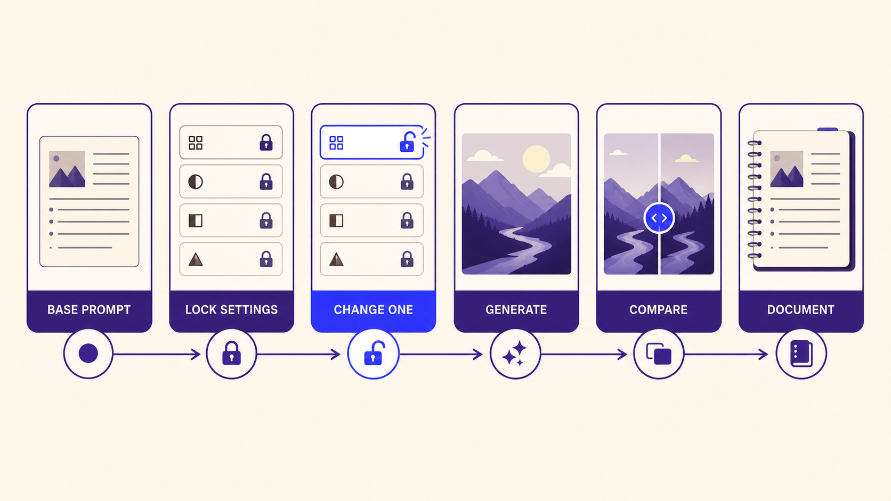
Objective: Practice controlled experimentation by changing only one prompt or parameter variable per generation.
Part A — Choose one variable
Lighting, style, camera distance, aspect ratio, seed, steps, or CFG scale.
| Version | Variable changed | Exact change | Visual effect | Problems | Next decision |
|---|---|---|---|---|---|
| 1 | |||||
| 2 | |||||
| 3 |
Activity 7 — Parameter Influence Ranking
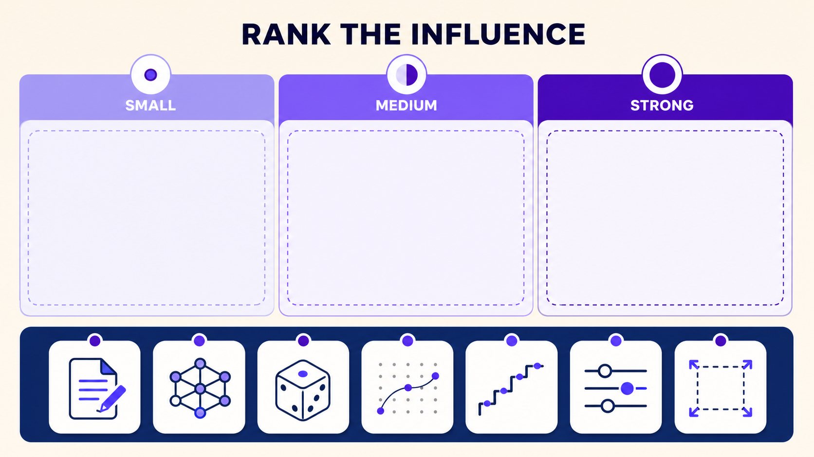
Instructions: Place each parameter in the influence zone that best fits your experience. There is no single universal answer because tools differ, but you must justify your choices.
| Parameter card | Small influence | Medium influence | Strong influence | Evidence from your test |
|---|---|---|---|---|
| Prompt wording | ☐ | ☐ | ☐ | |
| Model / checkpoint | ☐ | ☐ | ☐ | |
| Seed | ☐ | ☐ | ☐ | |
| Sampler | ☐ | ☐ | ☐ | |
| Steps | ☐ | ☐ | ☐ | |
| CFG scale | ☐ | ☐ | ☐ | |
| Aspect ratio | ☐ | ☐ | ☐ |
Workflow Documentation Log
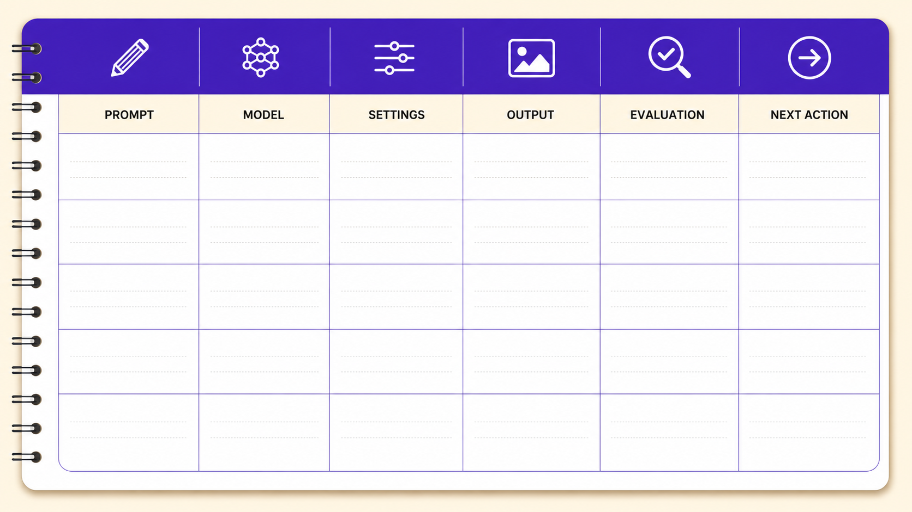
Documentation is part of creative control, not administrative extra work. If you cannot explain how the image was made, you cannot reliably revise or defend it.
| Prompt | Tool | Model / preset | Seed | Settings | Output notes | Problem | Next action |
|---|---|---|---|---|---|---|---|
Final Boss Challenge — Build the Tool Strategy
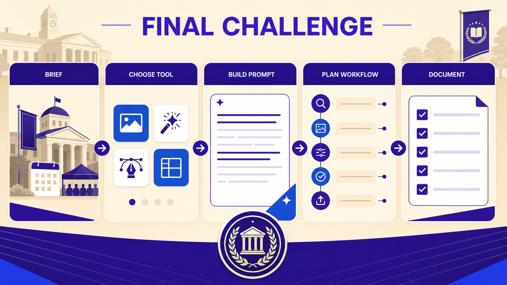
Challenge brief: Create a visual direction for a university campaign about “Human Creativity and Artificial Intelligence.” The campaign needs quick moodboard ideas, a controlled poster background, social media variations, and final typography added manually.
Part A — Break down the task
| Need in the brief | Tool requirement | Reason |
|---|---|---|
| Quick moodboard exploration | ||
| Controlled poster background | ||
| Social media variations | ||
| Manual typography later |
Part B — Choose the workflow
| Workflow stage | Tool type | What you will generate or test | What you will document |
|---|---|---|---|
| Stage 1: exploration | |||
| Stage 2: controlled generation | |||
| Stage 3: variation | |||
| Stage 4: final preparation |
Part C — Write the production prompt
Part D — 60-second presentation script
Final Assessment
Complete the quiz. Your score will be reported to the LMS when submitted. Short-answer prompts are included for reflection and practice, but the automatic score uses the multiple-choice and true/false items.
Exit ticket
| Prompt | Your answer |
|---|---|
| One tool category I can now identify is... | |
| One parameter I can now explain is... | |
| One reason the same prompt changes across tools is... | |
| One workflow decision I would document is... |
Lesson Summary and Next Steps
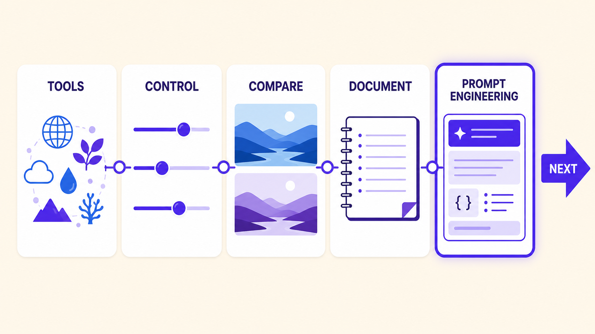
AI image generation is an ecosystem of tools, not one universal system. Web-based tools, semi-controlled platforms, and open-source workflows each offer different balances of speed, access, control, transparency, and responsibility.
The key habit in this lesson is to choose the tool according to the creative objective. Quick ideation, moodboard exploration, prompt testing, character consistency, inpainting, upscaling, and professional workflow documentation do not all require the same platform.
You also practiced the technical vocabulary of control: prompt, model, checkpoint, seed, sampler, steps, CFG scale, aspect ratio, and negative prompt. By changing one variable at a time and documenting results, you move from accidental images toward intentional creative workflows.
| Task | Complete |
|---|---|
| Completed the Tool Choice Wake-Up. | ☐ |
| Classified tools in the Ecosystem Sorting Lab. | ☐ |
| Completed gap-fill exercises. | ☐ |
| Matched parameters to meanings. | ☐ |
| Compared the same prompt in two tools. | ☐ |
| Completed one-variable testing. | ☐ |
| Documented workflow settings and decisions. | ☐ |
| Completed the final tool strategy challenge. | ☐ |
| Completed the exit ticket. | ☐ |